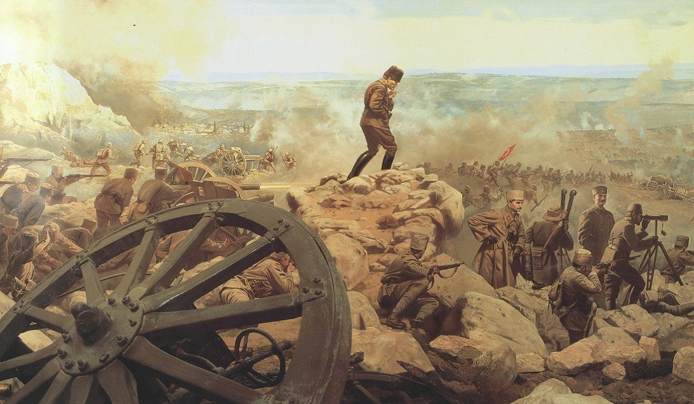
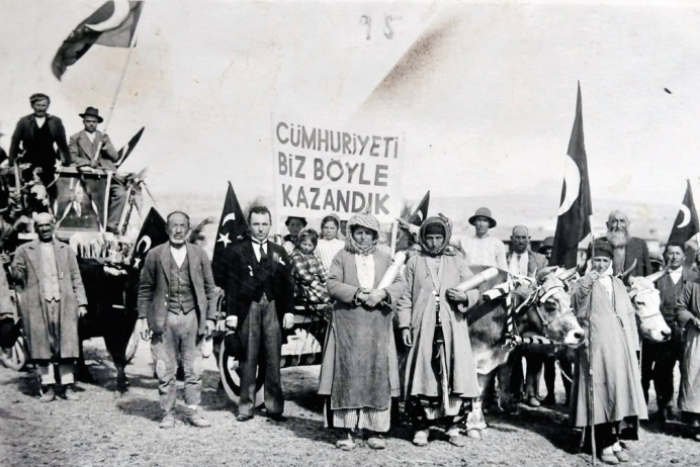
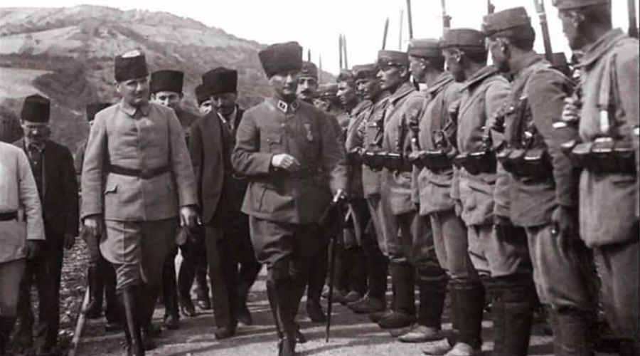

During the summer and fall of 1919, with authorization from the Supreme Allied War Council, the Greeks occupied Adrianople (Edirne), Bursa, and Smyrna (Izmir), where a landing was effected under cover of an Allied flotilla that included United States warships. No Turkish opposition was offered, and the Greeks had soon moved as far as Usak, 175 kilometers (109 miles) inland from Izmir.Military action between Turks and Greeks in Anatolia in 1920 was inconclusive, but the nationalist cause was strengthened the next year by a series of brilliant victories. Twice (in January and again in April) Ismet Pasha defeated the Greek army at Inonu area, blocking its advance into the interior of Anatolia. In July, in the face of a third offensive, the Turkish forces fell back in good order to the Sakarya River, 80 kilometers (50 miles) from Ankara, where Atatürk took personal command and decisively defeated the Greeks in a twenty day battle.
An improvement in Turkey's diplomatic situation accompanied military success. Impressed by the viability of the nationalist forces, both France and Italy had withdrawn from Anatolia by October 1921. Treaties were signed that year with the Soviet Union, the first European power to recognize the nationalists, establishing the boundary between the two countries. In 1919 a war broke out between the Turkish nationalists and the newly proclaimed Armenian republic. Armenian resistance was broken by the summer of 1921, and the Kars region was occupied by the Turks. In 1922 the nationalists recognized the Soviet absorption of what remained of the Armenian state, and Armenian minority in Turkey moved back to Armenia. The final drive against the Greeks began in August 1922 with a battle called as the Battle of the Commander in Chief. In September the Turks moved into Izmir, where thousands were killed during the fighting and capture of the city. Greek soldiers who had crowded in Izmir, were taken away by Allied ships, leaving the city on fire before they pulled out in order to leave nothing behind.The nationalist army then concentrated on driving remaining Greek forces out of eastern Thrace, but the new campaign threatened to put the Turks in direct confrontation with Allied contingents defending access to the straits (Bosphorus and Dardanelles) and in Constantinople (modern Istanbul), where they protected the Ottoman government. French forces pulled out from their positions on the straits, but the British seemed prepared to hold their ground against the advancing Turkish nationalists. A crisis was averted when Atatürk accepted a British - proposed truce that brought an end to fighting in the region between the Turks and the Greeks and also signaled that the Allies were unwilling to intervene on the side of Greece. In compliance with the Armistice of Mudanya (near Bursa), concluded in October, Greek troops withdrew beyond the Maritsa River, allowing the Turkish nationalists to occupy territory up to that line. The armistice accepted a continued Allied presence on the straits and in Istanbul until a comprehensive settlement could be reached.
At the end of October 1922, the Allies invited both the Ankara and the Istanbul governments to a conference at Lausanne, but Atatürk was determined that the nationalist government should be the only spokesman for Turkey. The action of the Allies prompted a resolution by the Grand National Assembly in November 1922 that separated the offices of sultan and caliph and abolished the former. The assembly further stated that the Istanbul government had ceased to be the government of Turkey when the Allies seized the capital. In essence, the assembly had abolished the Ottoman Empire. Mehmed VI went into exile on Malta, and his cousin, Abdülmecid, was named caliph.Turkey was the only power defeated in World War I to negotiate with the Allies as an equal and to influence the provisions of the peace treaty. Ismet Pasha was the chief Turkish negotiator at the Lausanne Conference that opened in November 1922. The National Pact of 1919 was the basis of the Turkish negotiating position, and its provisions were recognized in the treaty concluded by Turkey in July 1923 with the Allied powers. The United States participated in the conference but, because it had never been at war with Turkey, did not sign the treaty.The Treaty of Lausanne recognized the present-day territory of Turkey with two exceptions: the Mossul area and Hatay province, which included the port of Alexandretta (present-day Iskenderun). The boundary with Iraq was settled by a League of Nations initiative in 1926, and Iskenderun was ceded to Turkey in 1939 by France in its capacity as League of Nations mandatory power for Syria. Detailed provisions of the treaty regulated use of the straits. General supervisory powers were given to the Straits Commission under the League of Nations, and the straits area was to be demilitarized after completion of the Allied withdrawal. Turkey was to hold the presidency of the commission, which included the Soviet Union among its members.The capitulations and foreign administration of the Ottoman public debt, which infringed on the sovereignty of Turkey, were abolished. Turkey, however, assumed 40% of the Ottoman debt, the remainder being apportioned among other former Ottoman territories. Turkey was also required to maintain low tariffs on imports from signatory powers until 1929. The Treaty of Lausanne reaffirmed the equality of Muslim and non-Muslim Turkish nationals. Turkey and Greece agreed to a mandatory exchange of their respective Greek and Turkish minorities with the exception of some Greeks in Istanbul and Turks in western Thrace.On 29 October 1923, the Grand National Assembly proclaimed the Republic of Turkey. Atatürk was named as the President, and Ankara as its capital. The War of Independence which started on 19 May 1919 with Ataturk's arrival in Samsun, was concluded with victory and the modern state of Turkey was born.
  